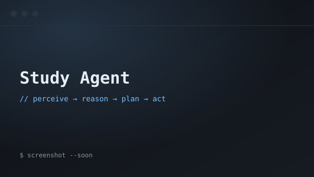
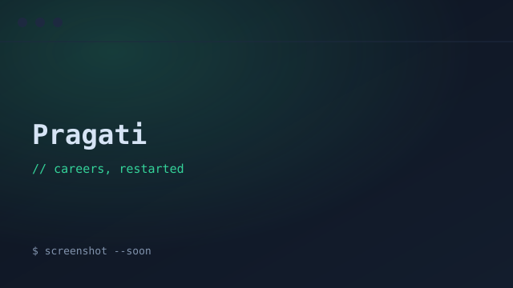
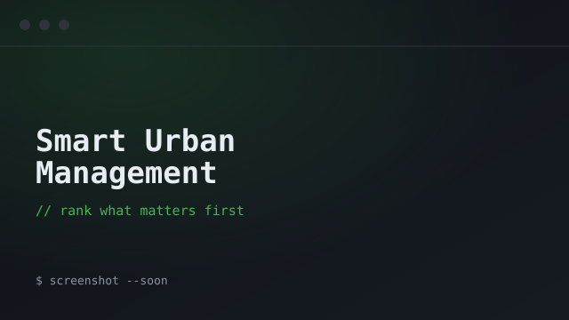
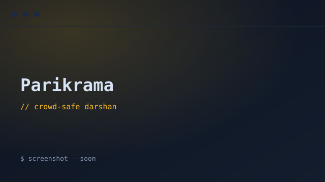

languages
- Python
- C++
- JavaScript
- HTML
- CSS
Full-Stack Developer & Problem Solver
I build modern, responsive, and user-focused web applications — a React/Vite frontend talking to a Node or Flask backend — while continuously sharpening my problem-solving through Data Structures & Algorithms.
Open to Opportunities · Internships 2027
supreet@portfolio:~$ cat focus.log
buildingModern full-stack web applications
practisingData Structures & Algorithms, daily
learningSystem Design & Backend Development
preparingSoftware Engineering internships, 2027
supreet@portfolio:~$ cat about.md
I'm Supreet Vardhamane, a Computer Science student who loves building modern web applications and solving challenging programming problems. I enjoy turning ideas into interactive, responsive, full-stack products and care about clean, readable code that solves a real, human problem.
Alongside web development I'm constantly sharpening my Data Structures & Algorithms and picking up new technologies on the way to becoming a well-rounded software engineer. When I'm not coding, you'll usually find me grinding LeetCode, taking online courses, or shipping a new personal project — building in public so the progress stays honest.
supreet@portfolio:~$ ./stats.sh
50+
LeetCode solved
6+
Projects built
6
Core technologies
100+
Hours learning
supreet@portfolio:~$ ls skills/
supreet@portfolio:~$ ls projects/ --featured

★ featured project
A full-stack AI study planner that turns dense PDFs into structured, personalised learning workflows — built with a focus on performance, reliability, and a clean UX.

A full-stack platform helping women re-enter the workforce — mentorship matching, structured learning modules, and an ML recommendation engine that surfaces skill gaps. Secure auth with role-based access and progress dashboards.

A civic issue-reporting platform where citizens report and track urban problems — potholes, drainage, streetlights — over a RESTful Flask API. A custom priority-scoring algorithm weighs urgency, geographic impact, and population density.

A temple crowd-management system that monitors crowd density in real time with computer vision to reduce overcrowding and stampede risk during festivals.
More on GitHub → — explore repositories for more experiments, learning projects, and open-source work.
supreet@portfolio:~$ cat education.txt
B.E. in Computer Science & Engineering
2024 – 2028
9.65/10
supreet@portfolio:~$ cat experience.txt
Actively building personal projects, contributing on GitHub, solving algorithmic problems, and continuously learning modern software-development practices — shipping in public and treating every project as a chance to get a little better.
supreet@portfolio:~$ ls achievements/
Finalist — Internal Smart India Hackathon 2024
Siddaganga Institute of Technology
IEEE WIE Code Hackathon 2024
Siddaganga Institute of Technology
Operating Systems Basics
Cisco Networking Academy
Python (Basic)
HackerRank
Learn C++ — Beginner to Advanced
Abdul Bari
Complete Full-Stack Web Dev Bootcamp
Dr. Angela Yu
supreet@portfolio:~$ ./connect.sh
Got an internship, a project, or just an idea worth talking about? My inbox is always open — let's make something.